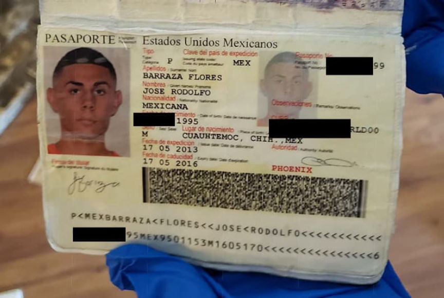
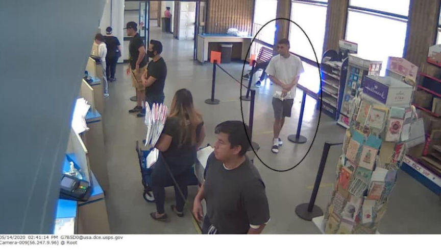
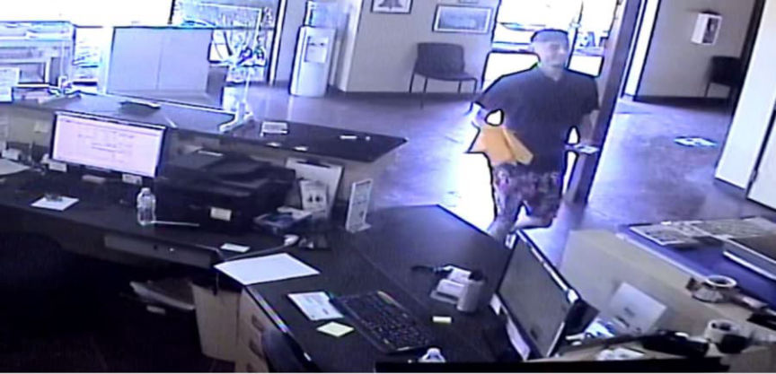
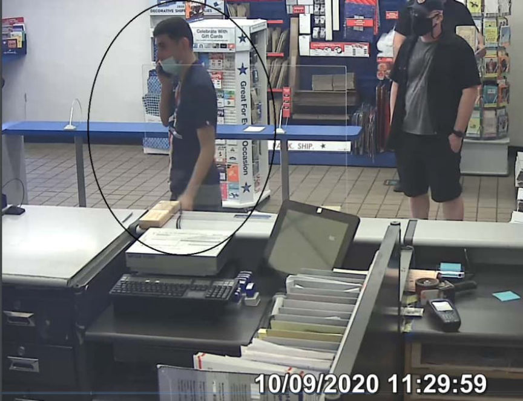
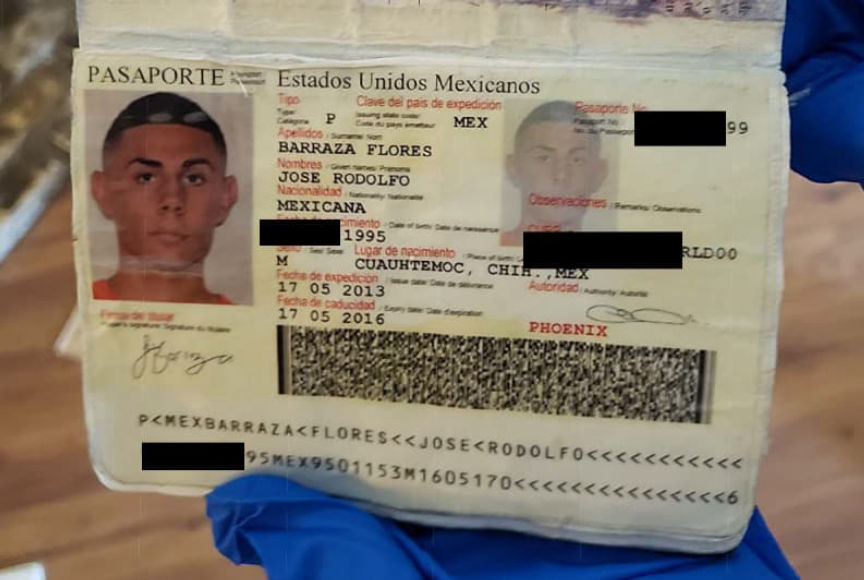
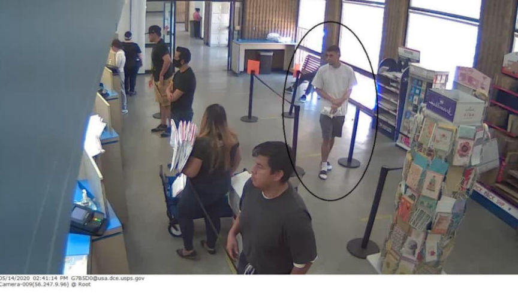
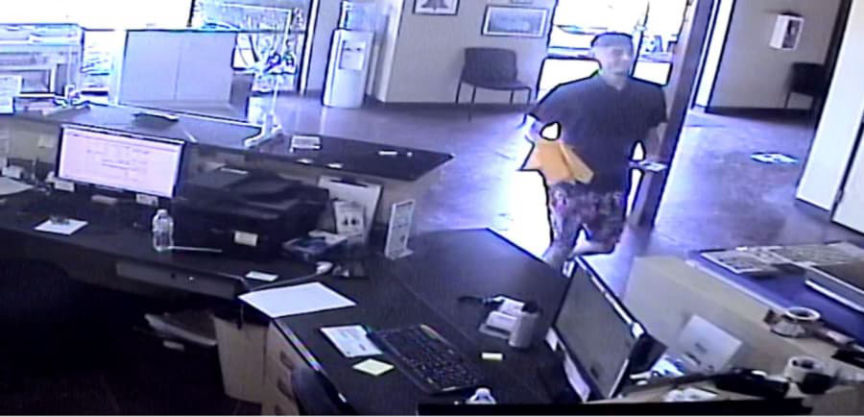
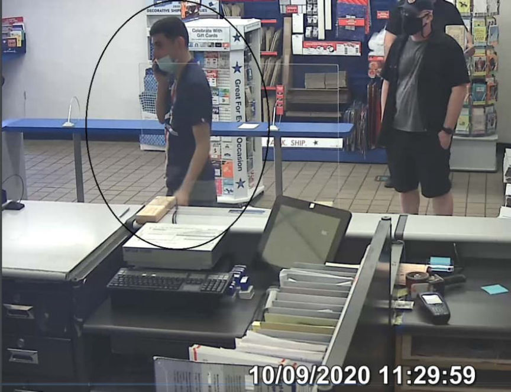

Meth Vendor IcyDicy Sentenced to 160 Months in Prison
~7 min read | Published on 2022-01-12, tagged Darkweb-Vendor, Sentenced using 1554 words.
A federal district judge in Florida sentenced a 26-year-old Arizona man to 160 months in prison for selling drugs on darkweb markets.
From 2018 to 2020, Jose Rodolfo Barraza Flores advertised and sold crystal methamphetamine, cocaine, counterfeit Percocet pills, and other drugs on White House Market, Empire Market, and Yellow Brick Market. According to a criminal complaint filed by FBI Special Agent Gregory Hoffman, Flores operated the vendor accounts “GXAW” and “IcyDicy.”

During the investigation, feds conducted a substantial number of controlled purchases from Flores’ vendor accounts. In one order, an undercover fed purchased 500 counterfeit oxycodone pills. Below is an example of one of the controlled purchases on Yellow Brick Market:
On September 2, 2020, FBI agents purchased four (4) ounces of crystal methamphetamine from GXAW on Yellow Brick Road Market for .157277 Bitcoins. In the description, GXAW advertised the drugs as “4 oz 99% Crystal Meth”. After receiving the package in the Southern District of Florida, agents found a crystalline substance secreted in a wax candle. The substance was sent to the DEA Southeast Laboratory for testing with positive lab results for I12.6g (+- 0.2g) methamphetamine hydrochloride (100% Purity +-6%).

One Yellow Brick vanished, feds started purchasing from the vendor on Empire Market. And once Empire Market vanished, feds started purchasing from the vendor on White House Market. Example below.
Since at least October of 2020, agents identified a narcotics vendor operating on White House Market under the moniker IcyDicy. On several occasions, FBI agents have made undercover online purchases of crystal methamphetamine from IcyDicy on White House Market and received the drugs via U.S. Mail, shipped to undercover mailboxes throughout the Unites States to include Palm Beach County, Florida. For instance:

On December 4, 2020, FBI agents purchased twenty-eight (28) grams of crystal methamphetamine from IcyDicy on White House Market for 3.035592319950 XMR (Monero). In the description, IcyDicy advertised the drugs as “14 grams 99% Crystal Meth”. The package was mailed on December 8, 2020, at the Glendale Post Office, Glendale, AZ. Postal Inspectors recovered the package and upon opening it, agents found a crystalline substance secreted in a wax candle, similar to the crystal methamphetamine received from UXAW and IcyDicy in prior purchases. The substance field-tested positive for methamphetamine and weighed approximately 30.4 grams.

Postal Inspectors obtained the IP address of the defendant or one of his co-conspirators after the party checked the tracking on one of the packages ordered by law enforcement. The IP address was associated with a Cox account and a property that belonged to the defendant’s brother. Investigators also checked surveillance footage at the Post Office and identified the party responsible for mailing the packages as a Hispanic male. I suspect that the defendant had used a card to purchase postage on at least one occasion because investigators somehow linked the vendor to a Capital One bank account. Records from Capital One provided investigators with Flores’ identity, address, and Gmail email address. Records from Google pertaining to the GMail address revealed that Fores had set “[email protected]” as a recovery email address. The criminal complaint reveals that when investigators imported GXAW’s PGP key into Kleopatra, they noticed the email address “[email protected].” Flores, or a co-conspirator, had apparently used that email address when creating their PGP key.

Special Agent Hoffman wrote about the similarities between the two email addresses:
In your affiant’s training and experience, I am aware that regular internet users, and users of the darkweb in particular, often have common personalized naming schemes and themes with which they create email addresses, anonymous internet profiles, and account usernames. Therefore, due to the similarity in naming convention, between [email protected] and [email protected], your affiant believes it is reasonable to conclude that FLORES was operating the PGP account associated with the GXAW moniker.

A raid at the address associated with Flores resulted in the discovery of his Mexican passport, pictures of his family, drugs, and equipment used in the distribution of those drugs, including:
4-5 pounds of methamphetamine; an undisclosed quantity of cocaine; a pill press; melted wax in containers; hot plates; melted wax in pots and; candle molds similar to the candles used by the vendor accounts GXAW and IcyDicy.

Defendant kept some records of his drug orders on at least one of his HP Laptops, among other devices he used to conduct his dark web activity. Other information and photographs regarding drugs, darkweb vending, and the use of Cryptocurrency were found on another computer and phones belonging to FLORES which were recovered in the course of this investigation. Defendant only accepted cryptocurrency, in particular, Bitcoin and Monero, as payments for his drug sales and communicated with customers via encrypted messaging through marketplace-provided messaging services.
Feds analyzed the review sections of Yellow Brick Market and White House Market to get the total weight of the drugs Flores had distributed.
Yellow Brick:
Agents were able to aggregate the weights of drugs sold by GXAW as confirmed through this marketplace review process: 4878g of Meth 99%, 1815 pills of Pere M30s, 98.5g of Coke 96%, and 76g of Coke 77%.
White House:
Agents were able to aggregate the weights of drugs sold by GXAW as confirmed through this marketplace review process: approximately 4764 grams of methamphetamine and 4482 Perc M30s were sold by IcyDicy between July 19, 2020, and November 2, 2020.
Also, the DEA seized $75,000 in cash from Flores at a Greyhound and Amtrack station in Albuquerque, New Mexico. The DEA found the money in an amplifier stored in the luggage storage area of the bus. Flores said that he had brought the amplifier with him but had not known about the money. So the DEA wrote him a receipt for the “abandoned money.” The full text of the report is available below.
MY INVOLVEMENT IN THE SEIZURE OF $79,380 DOLLARS OF US CURRENCY. ON SEPTEMBER 9, 2016, DRUG ENFORCEMENT AGENCY (DEA) SPECIAL AGENT (SA) JARRELL PERRY AND I WERE CONDUCTING CONSENSUAL ENCOUNTERS AT THE GREYHOUND AND AMTRACK STATION IN ALBUQUERQUE, NM. WHILE THE GREYHOUND BUS WAS GETTING SERVICED IN THE MAINTENANCE BAY, I OBSERVED A BLACK TRATE" AMPLIFIER IN THE CHECK-IN LUGGAGE STORAGE AREA OF THE BUS THE AMPLIFIER HAD A CHECK-IN TAG THAT STATED THE AMPLIFIER BELONGED TO A JOSE BARRAZA-FLORES. THE CHECK-IN TICKET STATED MR. BARRAZA-FLORES WAS TRAVELING FROM INDIANAPOLIS, INDIANA, AND HIS FINAL DESTINATION WAS PHOENIX, ARIZONA. I FOUND IT STRANGE THERE WAS NO INSTRUMENT IN THE CHECK-IN LUGGAGE STORAGE OF THE BUS AND MR. BARRAZA-FLORES DID NOT HAVE ANY OTHER CHECK-IN-IN LUGGAGE.
I RETRIEVED THE AMPLIFIER FROM THE STORAGE AREA, AND I FELT THE AMPLIFIER WAS EXTREMELY HEAVY. I RETRIEVED MY CANINE ‘KIMBA’ FROM MY PATROL UNIT TO DO AN EXTERIOR SNIFF OF THE AMPLIFIER ALONG WITH OTHER LUGGAGE FROM THE CHECK-IN STORAGE. DURING THE EXTERIOR SNIFF, I OBSERVED ALERT BEHAVIOR FROM CANINE KIMBA WHEN SHE SNIFFED THE EXTERIOR OF THE AMPLIFIER. CANINE KIMBA IS CERTIFIED TO DETECT THE ODORS OF MARIJUANA, COCAINE, HEROIN, METHAMPHETAMINES, AND THEIR DERIVATIVES. CANINE KIMBA IS CERTIFIED BY THE CALIFORNIA NARCOTICS CANINE ASSOCIATION (CNCA), AND BY THE DEPARTMENT OF PUBLIC SAFETY CANINE PROGRAM. CANINE KIMBA AND I ARE A CERTIFIED WORKING TEAM. I INFORMED SA PERRY OF THE ALERT, I (sic?) SEEN FROM CANINE KIMBA THE AMPLIFIER WAS PLACED BACK IN THE STORAGE AREA OF THE BUS.

THE BUS LEFT THE MAINTENANCE LOT AND PARKED IN THE PASSENGER BOARDING AREA OF THE GREYHOUND BUS STATION, AND BEGAN TO BOARD PASSENGERS WHO ARE TRAVELING WEST TOWARD PHOENIX, AZ. SA PERRY AND I BOARDED THE BUS AND BEGAN CONSENSUAL ENCOUNTERS WITH THE PASSENGERS. DURING THE ENCOUNTERS SA PERRY TALKED TO MR. BARRAZA-FLORES. SA PERRY INFORMED ME HE HAD GOTTEN VOLUNTARY CONSENT FROM MR. BARRAZA-FLORES TO SEARCH THE AMPLIFIER WHICH WAS IN THE CHECK-IN STORAGE AREA OF THE BUS. DURING SA PERRYS SEARCH HE LOCATED TWO PLASTIC GROCERY BAGS INSIDE OF THE AMPLIFIER, WHICH CONTAINED LARGE AMOUNTS OF US CURRENCY. ALSO IN THE AMPLIFIER, THERE WAS A WHITE BED SHEET AND TWO WHITE BATH TOWELS INSIDE.
SA PERRY INFORMED ME MR. BARRAZA-FLORES WAS COMING FROM INDIANAPOLIS, INDIANA, AND WAS ON HIS WAY BACK TO PHOENIX, AZ. SA PERRY TOLD ME MR. BARRAZA-FLORES STATED HE WENT TO VISIT HIS AUNT AND UNCLE. HE STATED HIS AUNT AND UNCLE PLAY IN A BAND, AND THEY HAD ASKED HIM TO BRING AN AMPLIFIER WITH HIM. HE TOLD SA PERRY HE DID HAVE A GUITAR, BUT IT WAS BROKEN, AND THAT IS WHY HE DID NOT BRING IT ON THE TRIP. ACCORDING TO MR. BARRAZA-FLORES HE HAD MADE THE TRIP TO INDIANAPOLIS, INDIAN APPROXIMATELY 4 TIMES, AND HE HAS TAKEN THE AMPLIFIER WITH HIM ON THOSE TRIPS. MR. BARRAZA-FLORES STATED HE DID NOT KNOW THE AMPLIFIER CONTAINED MONEY, AND HE SAID IT DID NOT BELONG TO HIM. SA PERRY SEIZED THE MONEY AND GAVE MR. BARRAZA-FLORES A RECIEPT FOR THE ABANDONED MONEY. MR. BARRAZA-FLORES WAS RELEASED WITHOUT FURTHER INCIDENT.
In October 2021, Barraza Flores pleaded guilty to conspiracy to distribute a controlled substance and three counts of distribution of a controlled substance. U.S. District Judge Aileen M. Cannon imposed a sentence of 160 months in prison and a $400 fine.
Attached:
proffer statement (pdf) Report on cash seizure (pdf)
USAO press release archive.org, archive.is, archive.is .onion
From 2018 to 2020, Jose Rodolfo Barraza Flores advertised and sold crystal methamphetamine, cocaine, counterfeit Percocet pills, and other drugs on White House Market, Empire Market, and Yellow Brick Market. According to a criminal complaint filed by FBI Special Agent Gregory Hoffman, Flores operated the vendor accounts “GXAW” and “IcyDicy.”
Drugs seized during the execution of a search warrant.
During the investigation, feds conducted a substantial number of controlled purchases from Flores’ vendor accounts. In one order, an undercover fed purchased 500 counterfeit oxycodone pills. Below is an example of one of the controlled purchases on Yellow Brick Market:
On September 2, 2020, FBI agents purchased four (4) ounces of crystal methamphetamine from GXAW on Yellow Brick Road Market for .157277 Bitcoins. In the description, GXAW advertised the drugs as “4 oz 99% Crystal Meth”. After receiving the package in the Southern District of Florida, agents found a crystalline substance secreted in a wax candle. The substance was sent to the DEA Southeast Laboratory for testing with positive lab results for I12.6g (+- 0.2g) methamphetamine hydrochloride (100% Purity +-6%).

Police found a passport belonging to Flores at a property assosciated with his brother.
One Yellow Brick vanished, feds started purchasing from the vendor on Empire Market. And once Empire Market vanished, feds started purchasing from the vendor on White House Market. Example below.
Since at least October of 2020, agents identified a narcotics vendor operating on White House Market under the moniker IcyDicy. On several occasions, FBI agents have made undercover online purchases of crystal methamphetamine from IcyDicy on White House Market and received the drugs via U.S. Mail, shipped to undercover mailboxes throughout the Unites States to include Palm Beach County, Florida. For instance:
USPIS identified Flores on USPS security camera footage.
On December 4, 2020, FBI agents purchased twenty-eight (28) grams of crystal methamphetamine from IcyDicy on White House Market for 3.035592319950 XMR (Monero). In the description, IcyDicy advertised the drugs as “14 grams 99% Crystal Meth”. The package was mailed on December 8, 2020, at the Glendale Post Office, Glendale, AZ. Postal Inspectors recovered the package and upon opening it, agents found a crystalline substance secreted in a wax candle, similar to the crystal methamphetamine received from UXAW and IcyDicy in prior purchases. The substance field-tested positive for methamphetamine and weighed approximately 30.4 grams.
USPIS identified Flores on USPS security camera footage.
Postal Inspectors obtained the IP address of the defendant or one of his co-conspirators after the party checked the tracking on one of the packages ordered by law enforcement. The IP address was associated with a Cox account and a property that belonged to the defendant’s brother. Investigators also checked surveillance footage at the Post Office and identified the party responsible for mailing the packages as a Hispanic male. I suspect that the defendant had used a card to purchase postage on at least one occasion because investigators somehow linked the vendor to a Capital One bank account. Records from Capital One provided investigators with Flores’ identity, address, and Gmail email address. Records from Google pertaining to the GMail address revealed that Fores had set “[email protected]” as a recovery email address. The criminal complaint reveals that when investigators imported GXAW’s PGP key into Kleopatra, they noticed the email address “[email protected].” Flores, or a co-conspirator, had apparently used that email address when creating their PGP key.

USPIS identified Flores on USPS security camera footage.
Special Agent Hoffman wrote about the similarities between the two email addresses:
In your affiant’s training and experience, I am aware that regular internet users, and users of the darkweb in particular, often have common personalized naming schemes and themes with which they create email addresses, anonymous internet profiles, and account usernames. Therefore, due to the similarity in naming convention, between [email protected] and [email protected], your affiant believes it is reasonable to conclude that FLORES was operating the PGP account associated with the GXAW moniker.

They have pages of pictures of Flores at USPS locations.
A raid at the address associated with Flores resulted in the discovery of his Mexican passport, pictures of his family, drugs, and equipment used in the distribution of those drugs, including:
Defendant kept some records of his drug orders on at least one of his HP Laptops, among other devices he used to conduct his dark web activity. Other information and photographs regarding drugs, darkweb vending, and the use of Cryptocurrency were found on another computer and phones belonging to FLORES which were recovered in the course of this investigation. Defendant only accepted cryptocurrency, in particular, Bitcoin and Monero, as payments for his drug sales and communicated with customers via encrypted messaging through marketplace-provided messaging services.
Feds analyzed the review sections of Yellow Brick Market and White House Market to get the total weight of the drugs Flores had distributed.
Yellow Brick:
Agents were able to aggregate the weights of drugs sold by GXAW as confirmed through this marketplace review process: 4878g of Meth 99%, 1815 pills of Pere M30s, 98.5g of Coke 96%, and 76g of Coke 77%.
White House:
Agents were able to aggregate the weights of drugs sold by GXAW as confirmed through this marketplace review process: approximately 4764 grams of methamphetamine and 4482 Perc M30s were sold by IcyDicy between July 19, 2020, and November 2, 2020.
Also, the DEA seized $75,000 in cash from Flores at a Greyhound and Amtrack station in Albuquerque, New Mexico. The DEA found the money in an amplifier stored in the luggage storage area of the bus. Flores said that he had brought the amplifier with him but had not known about the money. So the DEA wrote him a receipt for the “abandoned money.” The full text of the report is available below.
MY INVOLVEMENT IN THE SEIZURE OF $79,380 DOLLARS OF US CURRENCY. ON SEPTEMBER 9, 2016, DRUG ENFORCEMENT AGENCY (DEA) SPECIAL AGENT (SA) JARRELL PERRY AND I WERE CONDUCTING CONSENSUAL ENCOUNTERS AT THE GREYHOUND AND AMTRACK STATION IN ALBUQUERQUE, NM. WHILE THE GREYHOUND BUS WAS GETTING SERVICED IN THE MAINTENANCE BAY, I OBSERVED A BLACK TRATE" AMPLIFIER IN THE CHECK-IN LUGGAGE STORAGE AREA OF THE BUS THE AMPLIFIER HAD A CHECK-IN TAG THAT STATED THE AMPLIFIER BELONGED TO A JOSE BARRAZA-FLORES. THE CHECK-IN TICKET STATED MR. BARRAZA-FLORES WAS TRAVELING FROM INDIANAPOLIS, INDIANA, AND HIS FINAL DESTINATION WAS PHOENIX, ARIZONA. I FOUND IT STRANGE THERE WAS NO INSTRUMENT IN THE CHECK-IN LUGGAGE STORAGE OF THE BUS AND MR. BARRAZA-FLORES DID NOT HAVE ANY OTHER CHECK-IN-IN LUGGAGE.
I RETRIEVED THE AMPLIFIER FROM THE STORAGE AREA, AND I FELT THE AMPLIFIER WAS EXTREMELY HEAVY. I RETRIEVED MY CANINE ‘KIMBA’ FROM MY PATROL UNIT TO DO AN EXTERIOR SNIFF OF THE AMPLIFIER ALONG WITH OTHER LUGGAGE FROM THE CHECK-IN STORAGE. DURING THE EXTERIOR SNIFF, I OBSERVED ALERT BEHAVIOR FROM CANINE KIMBA WHEN SHE SNIFFED THE EXTERIOR OF THE AMPLIFIER. CANINE KIMBA IS CERTIFIED TO DETECT THE ODORS OF MARIJUANA, COCAINE, HEROIN, METHAMPHETAMINES, AND THEIR DERIVATIVES. CANINE KIMBA IS CERTIFIED BY THE CALIFORNIA NARCOTICS CANINE ASSOCIATION (CNCA), AND BY THE DEPARTMENT OF PUBLIC SAFETY CANINE PROGRAM. CANINE KIMBA AND I ARE A CERTIFIED WORKING TEAM. I INFORMED SA PERRY OF THE ALERT, I (sic?) SEEN FROM CANINE KIMBA THE AMPLIFIER WAS PLACED BACK IN THE STORAGE AREA OF THE BUS.

THE BUS LEFT THE MAINTENANCE LOT AND PARKED IN THE PASSENGER BOARDING AREA OF THE GREYHOUND BUS STATION, AND BEGAN TO BOARD PASSENGERS WHO ARE TRAVELING WEST TOWARD PHOENIX, AZ. SA PERRY AND I BOARDED THE BUS AND BEGAN CONSENSUAL ENCOUNTERS WITH THE PASSENGERS. DURING THE ENCOUNTERS SA PERRY TALKED TO MR. BARRAZA-FLORES. SA PERRY INFORMED ME HE HAD GOTTEN VOLUNTARY CONSENT FROM MR. BARRAZA-FLORES TO SEARCH THE AMPLIFIER WHICH WAS IN THE CHECK-IN STORAGE AREA OF THE BUS. DURING SA PERRYS SEARCH HE LOCATED TWO PLASTIC GROCERY BAGS INSIDE OF THE AMPLIFIER, WHICH CONTAINED LARGE AMOUNTS OF US CURRENCY. ALSO IN THE AMPLIFIER, THERE WAS A WHITE BED SHEET AND TWO WHITE BATH TOWELS INSIDE.
SA PERRY INFORMED ME MR. BARRAZA-FLORES WAS COMING FROM INDIANAPOLIS, INDIANA, AND WAS ON HIS WAY BACK TO PHOENIX, AZ. SA PERRY TOLD ME MR. BARRAZA-FLORES STATED HE WENT TO VISIT HIS AUNT AND UNCLE. HE STATED HIS AUNT AND UNCLE PLAY IN A BAND, AND THEY HAD ASKED HIM TO BRING AN AMPLIFIER WITH HIM. HE TOLD SA PERRY HE DID HAVE A GUITAR, BUT IT WAS BROKEN, AND THAT IS WHY HE DID NOT BRING IT ON THE TRIP. ACCORDING TO MR. BARRAZA-FLORES HE HAD MADE THE TRIP TO INDIANAPOLIS, INDIAN APPROXIMATELY 4 TIMES, AND HE HAS TAKEN THE AMPLIFIER WITH HIM ON THOSE TRIPS. MR. BARRAZA-FLORES STATED HE DID NOT KNOW THE AMPLIFIER CONTAINED MONEY, AND HE SAID IT DID NOT BELONG TO HIM. SA PERRY SEIZED THE MONEY AND GAVE MR. BARRAZA-FLORES A RECIEPT FOR THE ABANDONED MONEY. MR. BARRAZA-FLORES WAS RELEASED WITHOUT FURTHER INCIDENT.
In October 2021, Barraza Flores pleaded guilty to conspiracy to distribute a controlled substance and three counts of distribution of a controlled substance. U.S. District Judge Aileen M. Cannon imposed a sentence of 160 months in prison and a $400 fine.
Attached:
USAO press release archive.org, archive.is, archive.is .onion